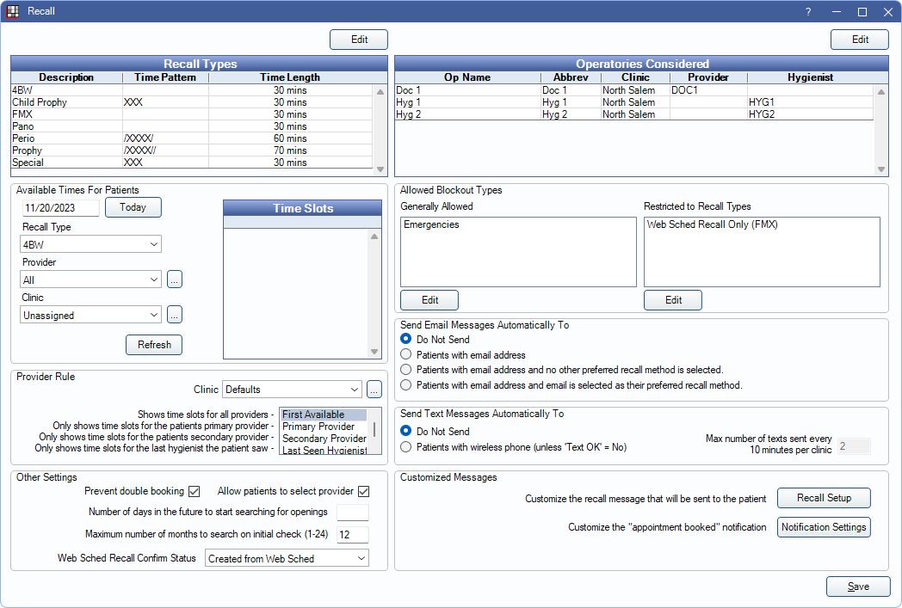

Web Sched Recall
Web Sched Recall allows a patient to schedule their recall appointment when they receive a recall reminder via email or text.
In eServices Setup, click Recall.
To begin using Web Sched Recall, first Sign Up for the service. Provider schedules must be created prior to utilizing Web Sched Recall.
Also see:
Recall Types
Recall types (prophy, childprophy, and perio) determine due date intervals and time pattern/appointment length.

Edit: Click to open Recall Types and edit as needed.
Operatories Considered
Lists the operatories considered for available timeslots. Only operatories marked Is Web Sched are considered.

Edit: Click to open Operatory Setup.
Available Times for Patients
This area offers a preview of up to one month of open time slots for a location, based on the current settings.

- Date: The date of the first previewed opening (start date). Click Today to insert today's date.
- Recall Type: Filter open slots by recall type.
- Provider: Filter open slots by provider.
- Clinic: Filter open slots by clinic.
Click Refresh to view openings.
Allowed Blockout Types
By default, Web Sched Recall does not consider Blockouts as available time. However, users can allow scheduling on top of specific blockout types. Click Edit to add a blockout type.

- Generally Allowed: Lists blockouts that are allowed to be scheduled over. Click Edit to add blockout types.
- Restricted to Recall Types: Lists blockouts that have been restricted to a specific Recall Type. Click Edit to open the list of Recall Types, then double-click a type to open Recall Types. From the Recall Types window, associate a blockout type.
Provider Rule
Select how provider selection affects available time slots.

- Clinic: Select Clinic from the dropdown list to choose clinic specific Provider Rule.
- First Available: Show available time slots for all providers.
- Primary Provider: Only show available time slots for the patient's primary provider.
- Secondary Provider: Only show available time slots for the patient's secondary provider.
- Last Seen Hygienist: Only show available time slots for the last hygienist seen by the patient.
Other Settings

- Prevent double booking: Check to block double booking of all Web Sched Recall appointments. Uncheck to use Appointment Rules to block double booking of specific procedures.
- Allow patients to select provider: When checked, all Providers, unless marked hidden or not a person, will be listed for patients to choose from, regardless of Operatories Considered or provider availability. Patients may not be able to schedule with all providers listed. When unchecked, patients are not shown a provider list and will only be shown available appointments for Operatories Considered. To add provider descriptions and photo that will be visible to the patient, see the Provider, Web Sched tab.
- Number of days in the future to start searching for openings: Enter the number of days in the future to search for the first available openings. Leave blank to include all available openings. For example, when 5 is entered, the first available opening offered to a recall patient will be five days in the future. When left blank, an opening in the next 30 minutes could be offered.
- Maximum number of months to search on initial check: The number of months Web Sched initially searches for open slots. Enter any value from 1-24. If no slots are available on initial check, the patient cannot continue scheduling their appointment. If slots are available, the patient can schedule their recall appointment. Available slots are checked each time the patient moves a month forward or backward.
- Web Sched Recall Confirm Status: Select the confirmation status to apply to appointments scheduled using Web Sched Recall. To customize options, see Confirmation Status. Defaults to Created from Web Sched.
Send Email Messages Automatically To
Select whether or not automated email Web Sched Recall reminders are sent, and if yes, to which patients.

- Do not send: Do not send automated email reminders to patients. This turns automated email reminders off.
- Patients with email addresses: Email automated recall reminders to any patient who has an email address.
- Patients with email address and no other preferred recall method is selected: Only email automated recall reminders to patients with an email address and no other Preferred Recall Method.
- Patients with email addresses and email is selected as their Preferred Recall Method: Only email automated recall reminders to patients with an email address who have also have email as their Preferred Recall Method.
Send Text Messages Automatically To
Select whether or not automated text Web Sched Recall reminders are sent.

- Do not send: Do not send automated text reminders to patients. This turns automated text reminders off.
- Patients with wireless phone (unless Text OK = No): Only send automated text reminders to patients who have a wireless phone number and are marked to accept text messages (Edit Patient Information, Text OK).
- Max number of texts sent every 10 minutes per clinic: Determines how many messages are sent in a batch. Defaults to 2. Limiting the batch amount can be useful when there are many messages to be sent (hundreds) and there is concern about possible message failure. Note: The automated eServices Schedule also affects when automated recall reminders are sent. See eServices Misc.
Customized Messages

- Recall Setup: Default settings for the Recall List affect when and to whom automated Web Sched Recall reminders are sent, as well as the message content and maximum number of reminders. Click to review settings. See Setup Recall.
- Notification Settings: See Web Sched Notify Setup.
To exclude Web Sched Recall messages from being sent on certain days, see Exclusion Days.
Technical Details
When using Web Sched Recall, make sure general recall settings are correct. See Setup Recall.
Provider Assignment Logic:
- Providers are assigned based on the operatory the appointment is scheduled in (the provider of the operatory for the time block). It is therefore important to assign a default provider to the operatory and/or assign the operatory to the provider's schedule time block.
- The provider's Schedule Setup should extend as far into the future as needed to schedule appointments.
- When a provider's schedule is not assigned to a specific operatory, Web Scheduling considers all Web Sched operatories where they are a primary provider as open for scheduling. This can result in appointments being created in operatories that appear to be closed.
Appointment Detail Logic:
- The appointment schedule's time increment affects appointment start/end. See Time Increments on Appointment View Setup.
- Recall type time pattern determines appointment length.
- Recall type procedures determine the procedures on the appointment.
Clinic Logic: Web Sched will first check for available openings in operatories of the patient's clinic. If the patient has no clinic, it will look at operatories for the clinic of the last scheduled or completed appointment. If no clinic can be determined, only time slots in operatories assigned to no clinic are considered (operatories flagged Is Web Sched with None as the clinic).
Aggregate Messages: When multiple patients are sent a Web Sched Recall reminder and share a common email address or wireless phone number (e.g., a family), the recall information will be aggregated into one message and a commlog will be generated for each patient.
Aggregate text message recall reminder:
"Dental checkups due: [FamilyListURLs]. Visit links to schedule appointments or call [OfficePhone]."
Aggregate email message recall reminder:
"These family members are due for a dental checkup:"
"[FamilyListURLs]"
"Please visit the links above or call our office today at [OfficePhone] to schedule your appointment."
The "[FamilyListURLs]" tag will be replaced lines that look like this: "Harry - Schedule appointment at http://od.ag/w/LWVhHh".